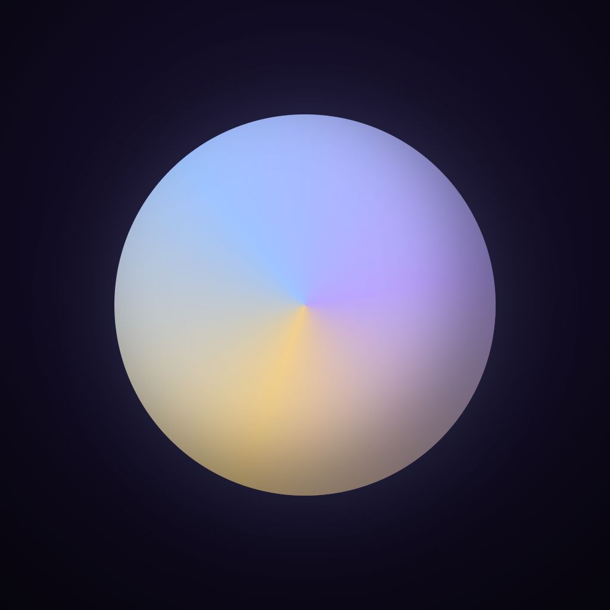
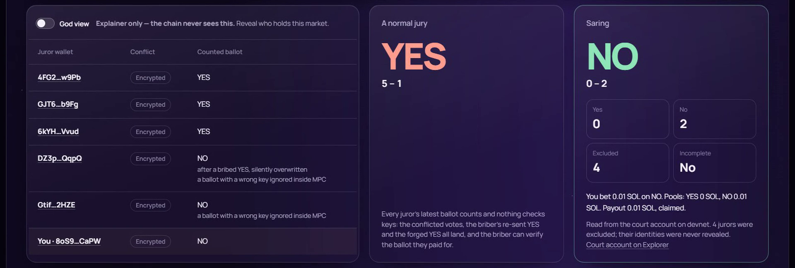

Saring
A conflict-blind jury for prediction-market disputes.
Arcium MPC drops every juror who holds a position in the disputed market, and never reveals who was dropped.
Would you let a judge rule on a case they bet on? In prediction markets, nobody checks.
of UMA disputes on Polymarket had a voter holding a position in that market
for markets with ≥ $1M volume: two out of three
of UMA voters control a Polymarket wallet
outcomes flip if they are removed. The gap is that nothing filters them
Every UMA vote on Polymarket disputes, Jan 2025 to Oct 2026, matched to voters' Polymarket wallets (CREATE2 + getOwners()). Open data and code: pugarhuda.github.io/saring
The obvious fix leaks. Filtering needs two lists that must both stay secret.
1. Publish the jury
and bribers know exactly whom to pay.
2. Publish the positions
and you dox every trader in the market.
UMA
Commit-reveal. Voter list and votes end up public; no position check.
Kleros
Random draw, hidden votes (Shutter). Does not check whether a juror holds a position. Prior art we credit.
MACI
Receipt-free via key change, but trusts a coordinator who sees everything.
Checking "is juror X a holder?" over two secret sets, with no trusted coordinator, is exactly what MPC is for.
The match happens inside Arcium's MPC. The chain sees only the tally.
A pari-mutuel market in the same program pays on it.
Kleros hides votes. Saring hides who is excluded.
42 real holders read from Solana mainnet. Same jury, two verdicts.

3 conflicted jurors vote YES. MPC drops them.
A bribed juror rotates his key. The briber's ballot is ignored and he can't tell.
You are juror #6. Bet on NO and MPC drops your ballot too.
What stays hidden, and what is published.
Hidden (only ciphertexts on chain)
| Jury | who sits on it |
| Positions | which ids hold the market |
| Ballots | how each juror voted |
| Seat keys | secret, held inside MPC |
| Exclusions | which jurors were dropped |
Published
| Verdict | yes · no |
| Count | excluded (how many, never who) |
| Overflow | incomplete → market refunds |
| Settlement | payouts on the verdict |
Honest MVP limits: the court authority seats jurors and relays positions, so it knows both lists (the chain doesn't). 32-bit ids, jury ≤ 8, holders ≤ 48. Devnet, not audited. Roadmap: SAS identities and positions recorded by CPI.
The court lives on Solana. Other chains feed it, pay it, or obey it.
Solana + Arcium · the court
v3.2 on devnet: encrypted holder set, jury, ballots and keys; MPC tally; settlement market. Real Panta holders read from mainnet.
Base
Limitless holders from mainnet → court → VAA settles Reality.eth.
Tempo
Paid dispute: MPP 402, 0.50 pathUSD, fee-sponsored settle.
Arbitrum
UMA OOv3 escalation manager and Kleros v2 IArbitratorV2, both by VAA.
Ethereum L1
70/70 conflicted votes proven against mainnet block headers.
Zcash
Shielded juror bonds, no-show slashed; verifier 12/12.
Hyperliquid
HIP-4 holders mirrored into a live court; settle contract tested, not deployed.
One VAA from the Solana program settled adapters on Base, Arbitrum, Ethereum Sepolia and Tempo. Bars = how much of the dispute loop runs on that chain.
Every claim links to a transaction or a rerunnable script.
devnet steps per browser run, each MPC step a signed Arcium callback
conflicted UMA votes proven against Ethereum block headers
of 4,121 Conflict Report tallies rebuilt exactly from L1 logs
one Wormhole VAA settled four chains' adapters
End-to-end test
arcium test: real Panta holders, stale-key bribe and forged ballot ignored, verdict 0/2/3, NO bettor paid, vault emptied.
Foundry fork tests
Against each chain's real core bridge: tampered payload, wrong emitter and wrong court all revert.
Open source, MIT
Program, circuits (pinned by hash), app, Conflict Report pipeline, 10-test HyperEVM court.
Sell to Solana prediction markets that resolve with an admin key today.
Who first
Solana-native venues resolving by admin key, single oracle or multisig, especially permissionless markets where creators also trade. Panta's 4 disputes were all settled by an admin key.
How they integrate
Today: we read position accounts from chain, no work on their side. Production: their program CPIs record_positions on each fill and points settlement at the verdict.
How we earn
A per-dispute fee from the bond the losing side forfeits. Venues pay nothing until a dispute. Juror rewards from the same fee. No token needed.
Distribution: the Conflict Report is the top of the funnel; the live app lets anyone sit on the jury. Expansion: insurance claims, escrow and bounty disputes, futarchy.
From a trusted court authority to no one holding both lists.
Devnet MVP
Court, MPC tally, settlement market, 6 chains wired by VAA, Conflict Report.
First pilot
10+ Solana PM teams, Panta first. Target: 5 calls, 1 LOI to pilot one market.
Remove the authority
Jurors self-register with Solana Attestation Service; markets record positions by CPI. 64-bit ids, bigger juries.
Mainnet
Audit, mainnet guardian set, SDK and one-call CPI guide.
Pugar Huda Mantoro
Solo founder. Informatics student at Universitas Islam Indonesia, Yogyakarta.
Full-stack and smart-contract developer (Rust, Solidity). Repeat builder on computing over secret data: 1st at iExec Vibe Coding (TEE OTC desk), Best Walrus Integration at Tatum × Build on Sui, 1st at Portaldot S1.
Why me: I measured the problem myself (the Conflict Report) before building the fix.
The ask
Run a Solana prediction market? Give me one market to pilot.
Sit on the jury yourself: saring-silk.vercel.app
Code: github.com/PugarHuda/saring
Data: pugarhuda.github.io/saring
X / Telegram: @BangDropID